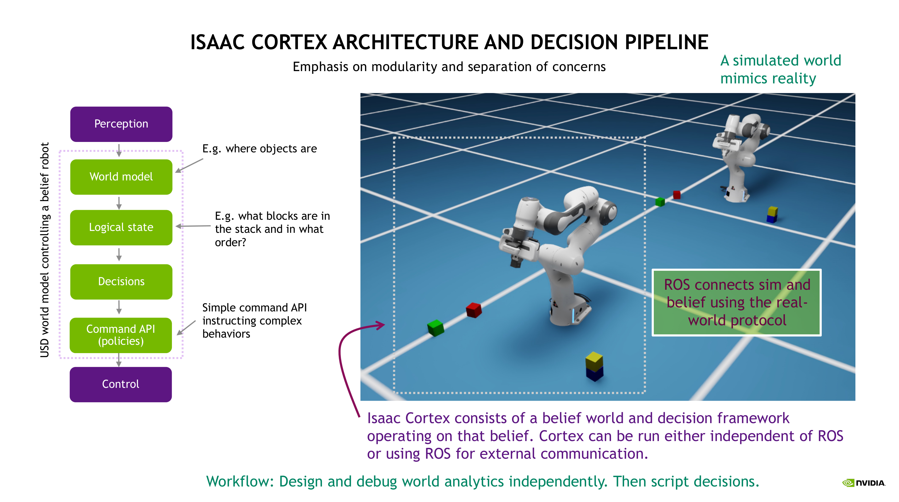
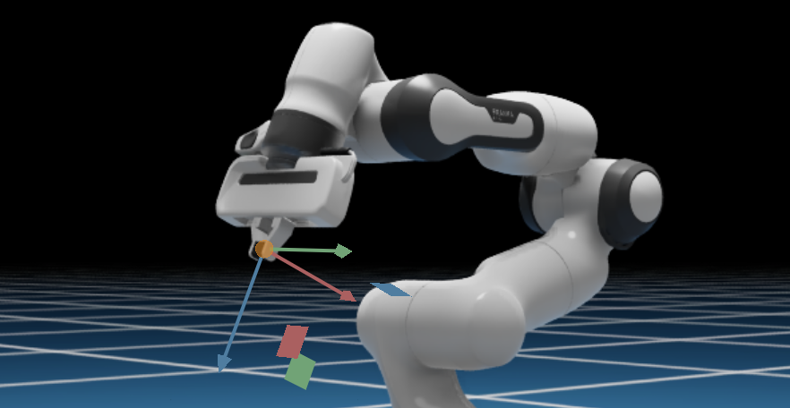

Isaac Cortex: Overview#
Warning
[DEPRECATED]: Cortex 프레임워크는 Isaac Sim 6.0.0부터 지원이 중단되었으며 향후 릴리스에서 제거될 예정입니다. 동작 프로그래밍을 위해 동작 트리에는 py_trees, 유한 상태 기계에는 transitions와 같은 오픈 소스 라이브러리로 마이그레이션하세요. Isaac Sim 7.0에는 이러한 라이브러리를 사용하는 예제가 포함될 예정입니다.
Cortex는 Isaac Sim의 로봇 공학 도구를 응집력 있는 협동 로봇 시스템으로 연결합니다. 협동 로봇 시스템은 복잡하며 이를 올바르게 만들기 위해 반복이 필요합니다. 우리가 나아가는 방향을 시연하고 개발 중인 동작 프로그래밍 모델을 미리 살펴볼 수 있도록 이 도구들을 제공합니다.
Tutorial Sequence#
Cortex 튜토리얼은 핵심 개념의 개요(이 튜토리얼)로 시작하여 점점 더 복잡한 일련의 예제를 단계별로 설명합니다.
튜토리얼을 순서대로 진행하는 것이 가장 좋습니다.
자세한 내용은 Nathan Ratliff의 Isaac Cortex GTC22 강연을 참조하세요
Overview of Cortex#
산업용 로봇은 로봇의 속도와 반복성을 활용하여 생산적인 작업을 수행합니다. 통합업체들은 고도로 스크립팅된 동작이 작업 셀과 조립 라인의 유용한 부분이 되도록 로봇 주변의 세계를 구조화합니다. 그러나 이러한 로봇들은 종종 관절 동작만 이동하도록 프로그래밍되어 있으며 일반적으로 주변 환경을 인식하지 못합니다. 이는 스크립팅하기 쉽게 만들지만 주변에 있기 매우 위험하기도 합니다. 이 빠르게 움직이는 위험한 기계들은 인간 작업자와 분리하기 위해 안전을 위해 일반적으로 케이지에 있습니다.
협동 로봇 시스템은 근본적으로 다릅니다. 이 로봇들은 케이지 없이 사람들과 가까이서 작업하도록 설계되었으며, 스크립팅된 산업용 로봇이 현재 처리할 수 있는 것보다 더 많은 지능과 손재주가 필요한 문제들의 긴 꼬리를 처리합니다. 본질적으로 반응적이고 주변 환경에 빠르게 적응해야 합니다(특히 인간 동료가 근처에 있을 때). 그러나 동시에 지원할 수 있는 응용 프로그램의 다양성에 가치가 있으므로 쉽게 프로그래밍 가능한 상태를 유지해야 합니다. Cortex는 이러한 문제를 해결하도록 설계된 Isaac Sim 위에 구축된 프레임워크입니다. Cortex는 게임 개발만큼 지능적인 협동 로봇 시스템 개발을 쉽게 만드는 것을 목표로 합니다.
협동 로봇 시스템은 일반적으로 세계 모델에 정보를 스트리밍하는 인식 모듈이 있으며, 로봇은 임무를 수행하기 위해 진전하기 위해 어떤 기술을 실행할지 결정해야 합니다. 선택할 수 있는 기술이 많은 경우가 많습니다. 로봇은 언제 물체를 집어 올릴지, 언제 문을 열지, 언제 버튼을 누를지, 궁극적으로 어떤 기술이나 기술 시퀀스가 이러한 단계를 수행하는 데 가장 적합한지 결정해야 합니다. 따라서 사용 가능한 정책과 컨트롤러를 쉽게 접근 가능한 API로 구성하고 이러한 결정의 간단한 프로그래밍을 가능하게 해야 합니다. 또한 사용자가 먼저 시뮬레이션에서 개발한 다음 물리적 로봇을 제어하기 위해 인식 및 실제 로봇 컨트롤러에 직접 연결할 수 있는 방식으로 이를 수행하고 싶습니다.
Cortex 파이프라인(다음 섹션에서 자세히 설명)은 시뮬레이터를 세계 모델로 활용하는 것을 중심으로 합니다. Isaac Sim은 PhysX가 위에 구축된 USD를 기반으로 하는 표현력 있는 세계 표현을 가지고 있어, 이 세계 모델은 상세한 상태 정보 데이터베이스이자 물리적으로 현실적입니다.
시뮬레이션과 현실 사이를 쉽게 전환하려면 개발 중에 인식 구성 요소를 모듈식으로 제거하고 시뮬레이션된 ground truth에서 직접 작동할 수 있어야 합니다. 또한 시뮬레이션된 로봇만 제어하는 것과 외부 로봇에 명령을 스트리밍하는 것 사이를 쉽게 전환할 수 있어야 합니다. 더불어 결정 프레임워크는 반응성을 일급 시민으로 지원해야 합니다. 이러한 모든 요구 사항은 아래에 설명된 대로 Cortex에 의해 본질적으로 지원됩니다.
Advanced note
현대 딥러닝 기술은 종종 세계 정보를 인코딩하는 추상적인 잠재 공간을 학습하지만, 그것이 중앙 정보 데이터베이스의 필요성을 없애지는 않습니다. 전체적인 솔루션으로 프로덕션에 배포될 만큼 충분히 강건하고 투명한 end-to-end 훈련 시스템은 아직 멀었습니다. 그때까지 실제 시스템에는 인식 모듈과 우리가 완전한 시스템으로 조율해야 하는 기술을 나타내는 많은 정책을 포함한 많은 부분이 있습니다. 이러한 개별 부분들이 추상적인 잠재 공간과 자체적인 인식 스트림(예: 피드백이 있는 전문화된 기술)의 혜택을 받더라도 여전히 프로그래밍 가능한 조율된 시스템으로 구성되어야 합니다. Cortex는 부분들이 완전한 시스템으로 합쳐지는 곳입니다.
The Cortex Pipeline#
{kind=link}

Cortex는 60Hz에서 매 사이클마다 단계가 실행되는 6단계 처리 파이프라인을 중심으로 합니다(위 그림의 다이어그램도 참조):
Perception: 감각 스트림이 인식 모듈에 들어와 세계에 무엇이 있는지와 그 물체들이 어디에 있는지에 대한 정보로 처리됩니다.
World modeling: 이 정보는 USD 데이터베이스에 기록됩니다. USD는 사용 가능한 모든 정보를 캡처하는 세계 믿음을 표현합니다. 중요하게도, 이 세계 모델은 시각화 가능하여 로봇의 마음을 들여다보는 창을 제공합니다.
Logical state monitoring: 일련의 논리적 상태 모니터가 세계를 모니터링하고 환경의 현재 논리적 상태를 기록합니다. 논리적 상태에는 문이 열려 있는지 닫혀 있는지 또는 특정 물체가 현재 그리퍼에 있는지와 같은 이산 정보가 포함됩니다.
Decision making: 세계 모델과 논리적 상태를 기반으로 시스템은 무엇을 할지 결정해야 합니다. 무엇을 할지는 노출된 명령 API(다음 항목 및 아래 참조)를 통해 사용 가능한 명령에 의해 정의됩니다. 가장 기본적인 형태의 결정 모델은 상태 기계입니다. 우리는 NVIDIA의 협동 로봇 시스템 프로그래밍에 대한 수년간의 연구를 바탕으로 한 Decider Network라는 새로운 형태의 계층적 결정 데이터 구조로 상태 기계를 구축합니다.
Command API (policies): 동작은 정책에 의해 구동되며 각 정책은 매개변수 세트로 제어됩니다. 예를 들어, 충돌 회피를 통한 모션은 정교한 모션 생성 알고리즘에 의해 제어되지만, 목표 엔드 이펙터 포즈와 엔드 이펙터가 접근해야 하는 방향을 지정하는 모션 명령으로 매개변수화됩니다. 개발자는 결정 레이어에서 접근할 수 있는 정책의 사용자 정의 명령 API를 노출할 수 있습니다.
Control: 마지막으로 저수준 제어가 실시간 실행을 위해 내부 로봇 상태를 물리적 로봇과 동기화합니다.
2~5 레이어(세계, 논리, 결정, 명령)는 믿음 모델(로봇의 마음에서 실행되는 시뮬레이션)에서 작동하며 물리적(또는 시뮬레이션된) 현실의 개념 없이 Isaac Sim 핵심 API 위에서 시뮬레이션에서 완전히 사용할 수 있습니다. 이를 통해 복잡한 시스템을 먼저 시뮬레이션에서 설계하고, 물리적(또는 시뮬레이션된) 세계에 연결하기 전에 먼저 시스템의 동작을 형성하는 데 집중할 수 있습니다. 그런 다음 ROS를 통해 세계 모델에 연결하는 인식을 추가하고 ROS를 통해 물리적 로봇에 연결하는 제어를 추가할 수 있습니다. 이 두 단계 모두 시뮬레이션된 인식과 제어를 사용하여 시뮬레이션에서 테스트할 수 있습니다(그리고 주장하건대 테스트해야 합니다). 그 목적을 위해 실제로 실행될 실제 인식 및 제어 모듈에 합성 센서 데이터를 공급하는 완전히 별도의 시뮬레이션된 모델을 사용할 수 있습니다. 이를 통해 물리적 세계에서 시도하기 전에 노이즈 특성, 지연 및 기타 실제 세계 아티팩트를 조정하고 end-to-end 시스템을 철저히 프로파일링하고 디버깅할 수 있습니다.
별도의 믿음과 시뮬레이션(또는 실제) 세계의 개념은 Cortex의 기본입니다. Cortex는 믿음(로봇의 마음)으로 알려진 시뮬레이션에서 작동합니다. 별도의 "외부" 시뮬레이션도 실제 세계를 시뮬레이션하며 실행될 수 있습니다. 또는 (믿음 시뮬레이션에 관한 한 동등하게) 믿음이 실제 물리적 세계와 나란히 작동할 수도 있습니다. 종종 우리는 이 두 세계를 한 로봇이 다른 로봇 앞에 있는 것으로 묘사합니다(위 그림 참조): 앞에 있는 로봇이 믿음이고 뒤에 있는 로봇이 현실 시뮬레이션입니다.
Cortex와 관련된 두 가지 익스텐션이 있습니다:
Isaacsim.cortex.framework: 이 익스텐션은 Cortex 프레임워크와 기본 클래스를 처리합니다.isaacsim.cortex.behavior: 이 익스텐션은 프레임워크로 구성된 샘플 동작을 처리합니다.
현재 Cortex 프로그래밍 모델은 독립 실행형 Python 앱 워크플로에서만 작동합니다.
A Basic Example#
예를 들어, 로봇 팔이 마법처럼 떠다니는 공을 따르도록 하고 싶다고 상상해보세요. 세계에는 로봇, 공, 카메라가 있습니다. 처리의 6단계가 매 사이클마다 이 로봇 공학 문제와 세계에 어떻게 매핑되는지 설명합니다:
Perception: 카메라에서 이미지가 캡처되어 스트리밍되고 공의 세계 변환으로 처리되어 ROS를 통해 Cortex에
tf로 스트리밍됩니다.World modeling: 세계는 USD로 모델링됩니다. 측정된 공의 변환이 기록되어 내부 세계 모델을 동기화할 시기와 빈도를 선택하는 논리적 상태 모니터와 동작에 사용 가능하게 됩니다.
Logical state monitoring: 모니터가 로봇이 공을 잡고 있는지 결정하는 데 사용됩니다. 로봇이 공을 잡고 있으면
has_ball상태가True로 설정되고 그렇지 않으면False로 설정됩니다.Decision making: 공의 현재 위치, 로봇의 현재 상태,
has_ball상태가 상태 기계에서 로봇이 공을 향해 이동할지 아니면 아무것도 하지 않을지 결정하는 데 사용됩니다.Command API: 로봇이 공을 향해 이동해야 하는 경우 공을 향해 이동 명령이 전송됩니다.
Control: 명령 API에서 받은 명령을 기반으로 ROS를 통해 실제 로봇에 저수준 제어 명령이 전송됩니다.
Command API#
PhysX는 아티큘레이션이라고 하는 일반화된 좌표로 로봇을 표현합니다. Isaac Sim에서 우리는 이를 아티큘레이션의 관절을 명령하기 위한 좋은 API를 제공하는 Articulation 클래스로 래핑합니다. 이 관절 명령은 저수준 제어 명령에 해당합니다. 그러나 종종 정책이 기술을 제공하기 위해 그 관절의 하위 집합을 관리합니다. 예를 들어 Franka 팔의 아티큘레이션은 9 DOF(팔에 7개, 두 손가락 각각에 하나씩)를 가집니다. 그러나 물리적 로봇에서 팔 제어는 그리퍼 제어와 분리되어 있으며, 그리퍼 명령은 이산적입니다(주어진 속도로 위치로 이동, 손가락이 힘을 느낄 때까지 닫기).
Cortex는 아티큘레이션의 관절 하위 집합에서 작동하고 그 관절을 제어하는 정책에 상위 수준 명령을 전송하기 위한 인터페이스를 노출하는 Commander 추상화를 제공합니다. Cortex 모델의 로봇은 관절을 관리하는 명령자 컬렉션이 연결된 아티큘레이션입니다. 예를 들어 CortexFranka 로봇에는 팔 관절을 관리하는 RMPflow 알고리즘을 캡슐화하는 MotionCommander와 손 관절을 관리하는 FrankaGripper 명령자가 있습니다. 명령은 이산적으로 또는 매 사이클에 명령자에게 전송될 수 있으며, 매 사이클 명령자에 의해 저수준 관절 명령으로 처리됩니다. 예를 들어 Franka의 경우 모션 명령(접근 방향이 있는 목표 포즈)을 전송할 수 있으며 명령자는 목표에 도달할 때까지 관절을 점진적으로 이동시킵니다. 그 목표는 매 사이클 변경(이동하는 물체에 적응)되거나 한 번만 설정될 수 있습니다. 어느 경우든 모션 명령자는 최신 명령으로 관절을 점진적으로 이동시킵니다.
명령자와 그 명령은 주어진 로봇에 대해 노출된 명령 API를 구성합니다. 예를 들어 robot이 CortexFranka 객체인 경우 위에서 언급한 두 명령자는 robot.arm(MotionCommander)과 robot.gripper(FrankaGripper)로 노출되므로 robot 객체를 가진 누구든 그 명령자 객체에 의해 노출된 명령 API에 접근할 수 있습니다. 예를 들어 robot.arm.send(MotionCommand(target_pose)) 또는 편의 메서드 robot.arm.send_end_effector(target_pose)를 호출하여 팔을 명령하고, robot.gripper.close()와 같은 메서드를 호출하여 그리퍼를 명령할 수 있습니다.
최신 명령과 최신 아티큘레이션 동작(저수준 관절 명령)에 대한 정보가 명령자에 캐시되어 물리적 로봇으로 해당 명령을 변환하는 제어 레이어의 모듈에서 접근 가능합니다.
이러한 도구들이 어떻게 함께 작동하는지 예제로 isaacsim.cortex.framework/isaacsim/cortex/framework/robot.py의 CortexFranka를 참조하세요.
Note on Rotation Matrix Calculations#
Walkthrough: Franka Block Stacking과 Walkthrough: UR10 Bin Stacking에서 단계별로 설명하는 완전한 예제를 포함한 많은 예제에서 엔드 이펙터 또는 블록 변환에 대한 계산을 수행하여 목표를 계산합니다. 해당 코드 블록을 이해하려면 회전 행렬을 특정 좌표계의 프레임으로 해석할 수 있음을 주목하세요. 구체적으로 회전 행렬의 각 열은 프레임의 축입니다.
이는 엔드 이펙터와 같이 축이 의미론적 의미를 가질 때 편리합니다. Franka의 엔드 이펙터 프레임은 다음 그림과 같이 x, y, z축이 각각 빨간색, 녹색, 파란색으로 표시됩니다.
{kind=link}

월드 좌표의 벡터로서 이 x, y, z축은 월드 좌표에서 엔드 이펙터의 회전 행렬의 열 벡터를 형성합니다.
예를 들어, 엔드 이펙터의 회전 행렬을 검색하고 다음을 사용하여 해당 축을 추출할 수 있습니다:
import isaacsim.cortex.framework.math_util as math_util
R = robot.arm.get_fk_R()
ax, ay, az = math_util.unpack_R(R)
그리고 z축이 아래를 가리키고 가장 유사한 y축을 유지하는 회전 행렬(목표)을 계산할 수 있습니다:
import numpy as np
# Start with a z-axis pointing down. Project the end-effector's y-axis orthogonal to it (and
# normalize). Then construct the x-axis as the cross product.
target_az = np.array([0.0, 0.0, -1.0])
target_ay = math_util.normalized(math_util.proj_orth(ay, target_az))
target_ax = np.cross(target_ay, target_az)
# Pack the axes into the columns of a rotation matrix.
target_R = math_util.pack_R(target_ax, target_ay, target_az)
이러한 유형의 수학은 일반적이며 직교 프레임에 대한 기본 기하학적 조작으로 이해할 수 있습니다.